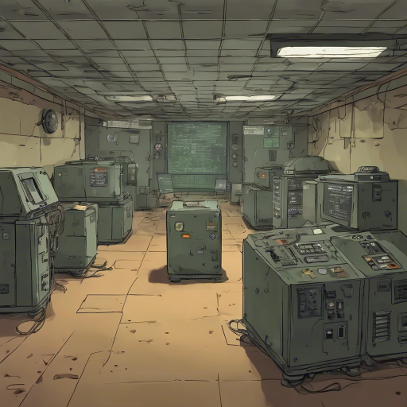

A bunker belsejében pislákoló fények. Egy generátor csendben duruzsol. A falakon térképek, számítógépek, és egy hangfelvétel: „Projekt: Aether – cél: tudati átvitel Füstön keresztül.” Ez nem pusztító fegyver volt – ez kapu volt valami másik világba.
